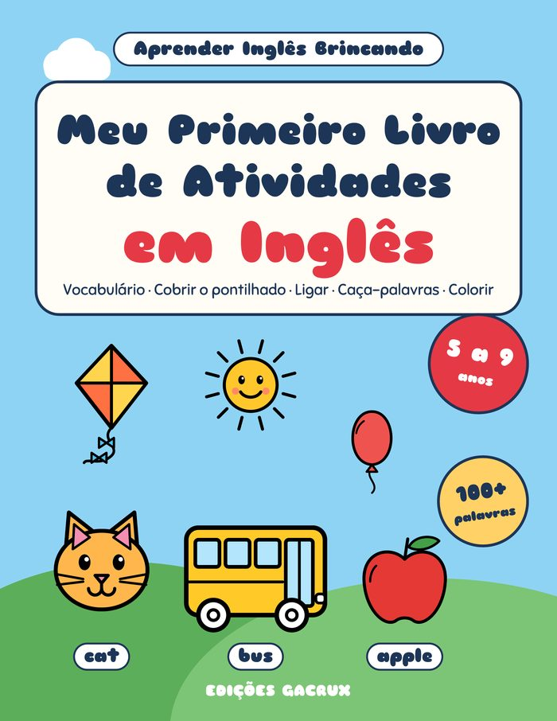
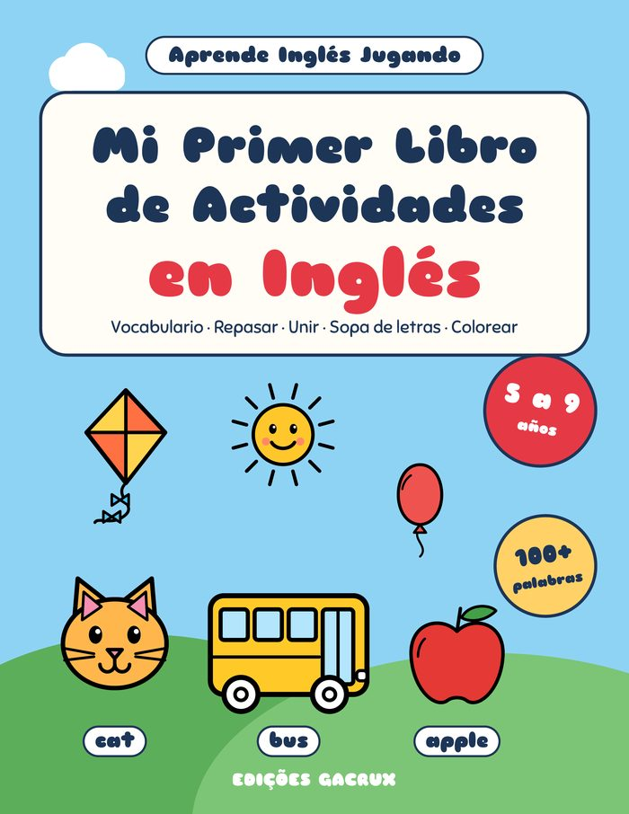
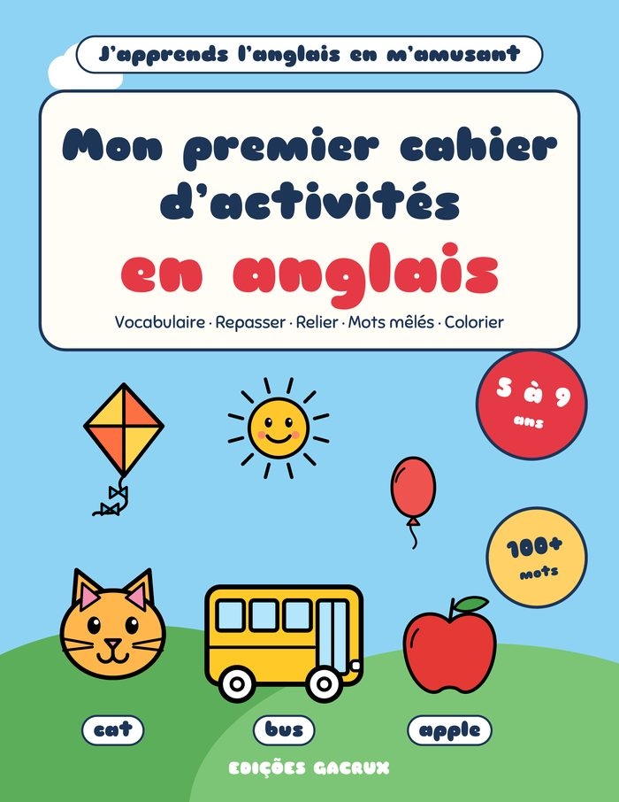

Livros para brincar, aprender e passar bons momentos
Livros de atividades para crianças e sopas de letras em letra grande, feitos com carinho pelas Edições Gacrux. Cada livro tem uma amostra grátis em PDF para imprimir em casa ou na escola.
Natal / Navidad
Livros de atividades de Natal para crianças dos 4 aos 8 anos.


Aprender inglês
Primeiras palavras em inglês para crianças dos 5 aos 9 anos, a partir de quatro línguas.

Português (Brasil) Meu Primeiro Livro de Atividades em InglêsInglês para crianças de 5 a 9 anos Baixar amostra grátis →
Español (España) Mi Primer Libro de Actividades en InglésInglés para niños de 5 a 9 años Descargar muestra gratis →
Français Mon premier cahier d’activités en anglaisL’anglais pour les enfants de 5 à 9 ans Télécharger l’extrait gratuit → Italiano
Il mio primo libro di attività in ingleseL’inglese per bambini dai 5 ai 9 anni
Scarica l’estratto gratuito →
Italiano
Il mio primo libro di attività in ingleseL’inglese per bambini dai 5 ai 9 anni
Scarica l’estratto gratuito →Sopas de letras
Passatempos em letra grande para adultos e seniores, com soluções.